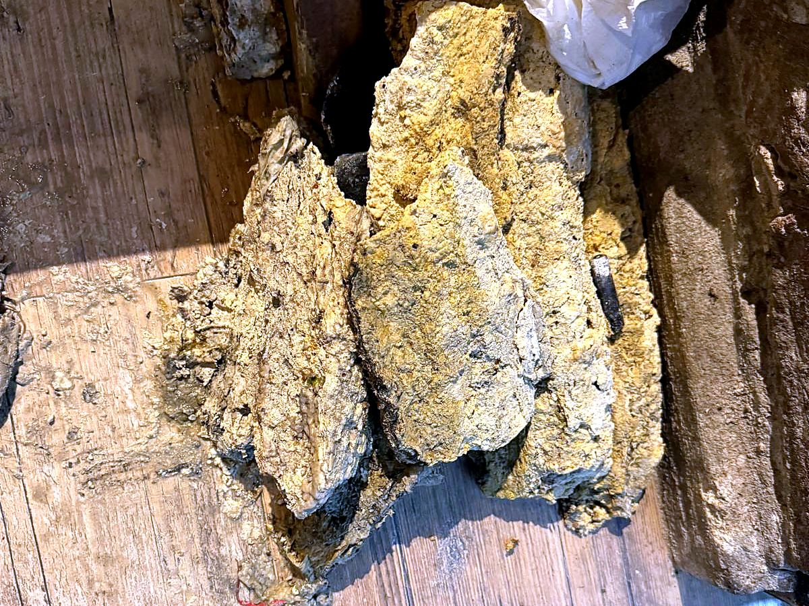

Syndici, restaurants, fabrieken: spoed industriële ontstopping nodig? Wij komen tussenbeide in in Brussel en omgeving om uw bedrijf draaiende te houden. Prijs op offerte.

Professionele netwerken hebben te maken met hogere belasting (keukenvet, chemicaliën, groot volume). Wij hebben de juiste apparatuur.
Specifieke Diensten:


Echte foto's van onze interventies
In een professionele keuken of een gebouw kan een verstopte leiding de activiteit stilleggen of alle bewoners treffen. We komen snel, ook 's nachts en in het weekend, om de hinder te beperken.
Afhankelijk van de installatie combineren we veer, hogedrukmachine en camera-inspectie. Voor restaurants en mede-eigendommen bieden we ook een regelmatige preventieve reiniging aan om noodgevallen te vermijden.
U krijgt een gratis inschatting via de telefoon en de prijs wordt ter plaatse bevestigd voor we beginnen. Geen teller die blijft lopen. We zijn bij u binnen 30 minuten in Brussel en binnen een uur in de rand, 24/7. Komt het probleem terug, dan komen wij terug.
In de 19 Brusselse gemeenten: Anderlecht, Oudergem, Sint-Agatha-Berchem, Brussel-Stad, Etterbeek, Evere, Vorst, Ganshoren, Elsene, Jette, Koekelberg, Laken, Sint-Jans-Molenbeek, Sint-Gillis, Sint-Joost-ten-Node, Schaarbeek, Ukkel, Watermaal-Bosvoorde, Sint-Lambrechts-Woluwe en Sint-Pieters-Woluwe. In de rand: Wemmel, Meise, Grimbergen, Vilvoorde, Machelen, Zaventem, Kraainem, Dilbeek, Asse en Drogenbos.
Ja, we kunnen 's morgens vroeg, 's avonds of 's nachts komen om uw activiteit niet te hinderen.
Ja, we maken een factuur op naam van de mede-eigendom of het bedrijf.
Ja, we ontstoppen en reinigen keukenafvoeren en vetvangers.
Neem contact met ons op voor een snelle offerte.